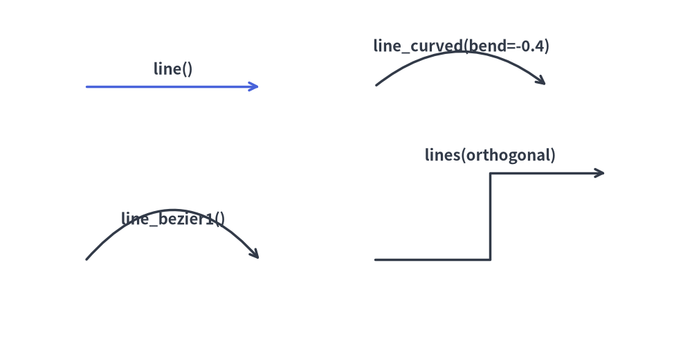
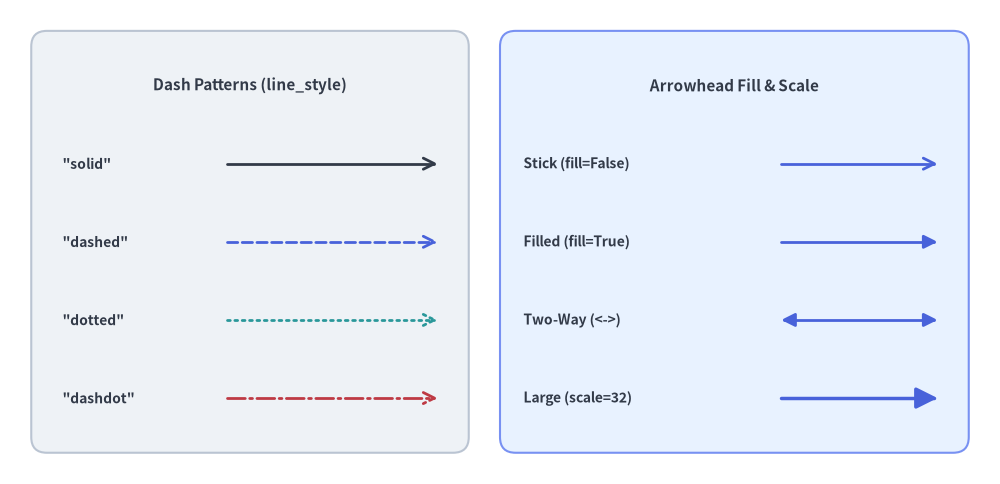
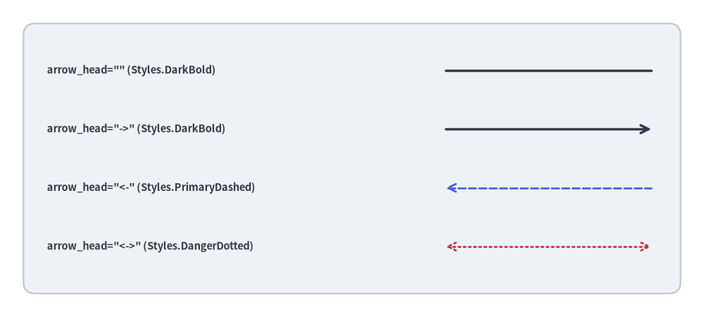
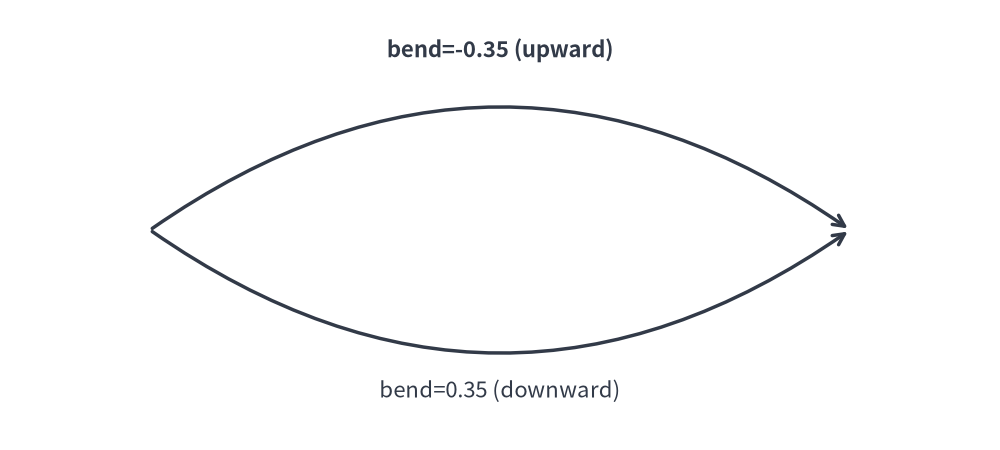
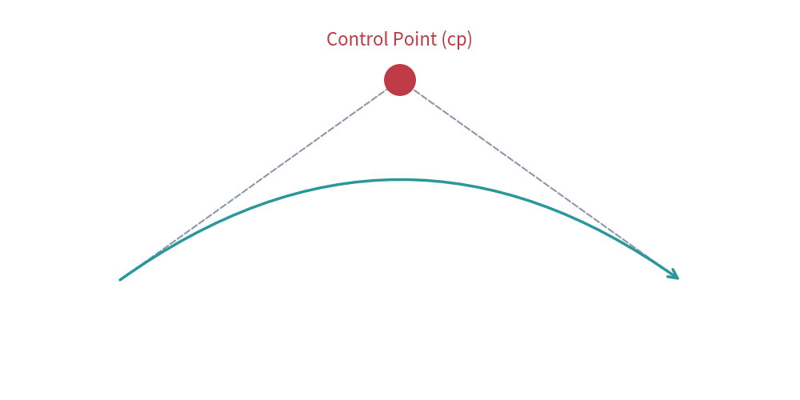
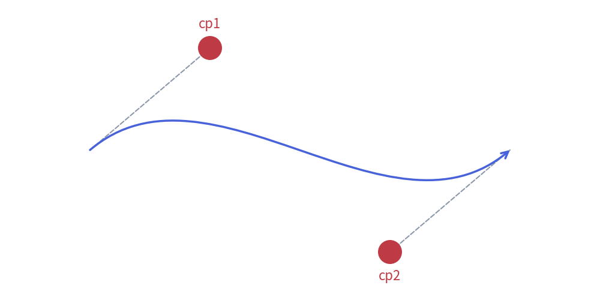
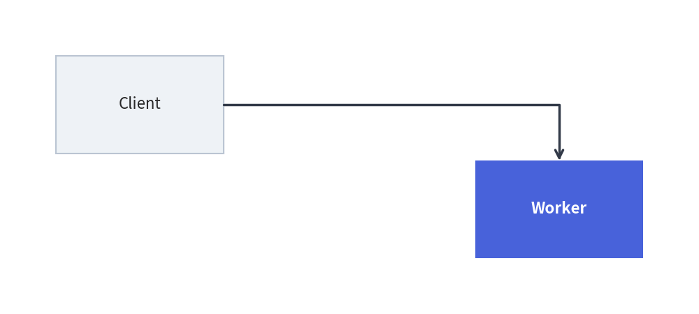
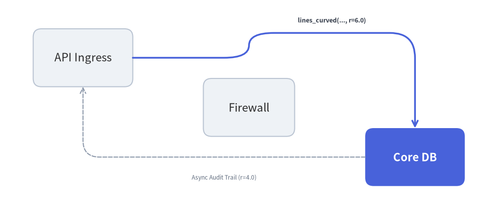
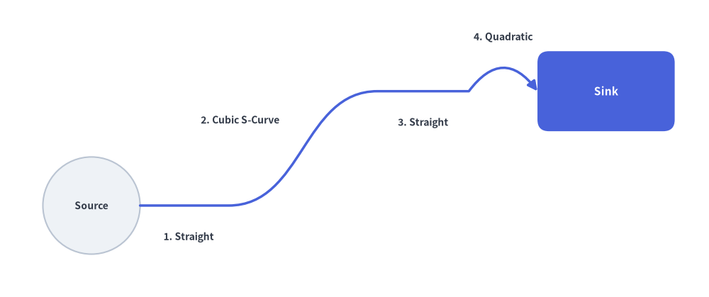
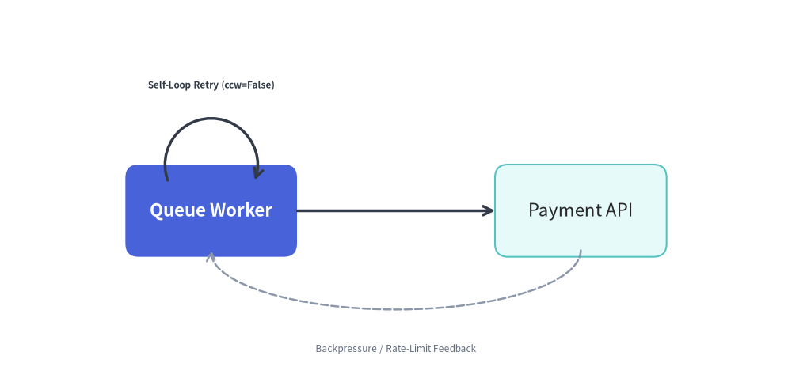

Lines & Connectors
Connectors establish communication pathways, data flow directions, and structural relationships between diagram entities.
The drawlib.lines module provides 8 vector connector functions covering straight lines, smooth circular arcs, quadratic and cubic Bézier curves, multi-point orthogonal (Manhattan) polylines, filleted polylines, compound paths, and elliptical arc connectors:

Source Code
from drawlib.canvas import save, setup
from drawlib.lines import (
line,
line_arc,
line_bezier1,
line_bezier2,
line_curved,
lines,
lines_bezier,
lines_curved,
)
from drawlib.shapes import rectangle
from drawlib.styles import Styles
from drawlib.text import text
setup(width=132, height=62)
# Background cards for the 4x2 showcase grid
cols = [19, 50.3, 81.7, 113]
for c_idx, cx in enumerate(cols):
r1_st = Styles.PrimaryNeutral if c_idx == 3 else Styles.Neutral
r2_st = Styles.PrimaryNeutral if c_idx == 1 else (Styles.SecondaryNeutral if c_idx == 3 else Styles.Neutral)
rectangle((cx, 46), width=29.5, height=25, style=r1_st.patch(shape_r=2))
rectangle((cx, 17), width=29.5, height=25, style=r2_st.patch(shape_r=2))
lbl = Styles.DarkBold.patch(text_size=10.0)
# Row 1: Straight line, circular arc spline, polyline, and filleted polyline
line((9, 50), (29, 50), arrow_head="->", style=Styles.PrimaryBold)
text((19, 37.5), "line()", style=lbl)
line_curved((40, 47), (60.5, 47), bend=-0.35, arrow_head="->", style=Styles.DarkBold)
text((50.3, 37.5), "line_curved()", style=lbl)
lines([(72, 45), (81.7, 45), (81.7, 54), (91.5, 54)], arrow_head="->", style=Styles.DarkBold)
text((81.7, 37.5), "lines()", style=lbl)
lines_curved([(103, 45), (113, 45), (113, 54), (123, 54)], r=3.8, arrow_head="->", style=Styles.PrimaryBold)
text((113, 37.5), "lines_curved()", style=lbl)
# Row 2: Quadratic Bézier, cubic Bézier, compound Bézier path, and elliptical arc
line_bezier1((9, 16), (29, 16), cp=(19, 27), arrow_head="->", style=Styles.SecondaryBold)
text((19, 8.5), "line_bezier1()", style=lbl)
line_bezier2((40, 20), (60.5, 20), cp1=(47, 29), cp2=(54, 11), arrow_head="->", style=Styles.PrimaryBold)
text((50.3, 8.5), "line_bezier2()", style=lbl)
lines_bezier((72, 16), [(78.5, 16), ((85, 27), (91.5, 20))], arrow_head="->", style=Styles.DarkBold)
text((81.7, 8.5), "lines_bezier()", style=lbl)
line_arc((113, 17), width=19, height=11, angle_start=15, angle_end=165, ccw=True, arrow_head="<->", style=Styles.DarkBold)
text((113, 8.5), "line_arc()", style=lbl)
save()
1. Imports & Overview
All line and curve functions are imported from drawlib.lines:
from drawlib.lines import (
line, # Straight line segment between xy1 and xy2
line_curved, # Circular arc spline between xy1 and xy2 with scalar bend
line_bezier1, # Quadratic Bézier curve with 1 control point (cp)
line_bezier2, # Cubic Bézier curve with 2 control points (cp1, cp2)
lines, # Multi-point polyline through a sequence of coordinates
lines_curved, # Multi-point polyline with automatic corner fillet radius r
lines_bezier, # Multi-segment path mixing straight, quadratic, and cubic Béziers
line_arc, # Open circular or elliptical arc connector
)
2. Terminal Arrowheads & Line Styling (Style)
2.1. The arrow_head Parameter
All 8 functions in drawlib.lines accept the arrow_head keyword argument:
arrow_head Value |
Terminal Marker Behavior | Description |
|---|---|---|
"" or "-" |
No arrowheads (plain line) | Plain undirected line without terminal markers (default). |
"->" |
Forward arrowhead at end point | Forward arrowhead at the destination endpoint (xy2 or final vertex). |
"<-" |
Backward arrowhead at start point | Reverse arrowhead at the starting endpoint (xy1 or initial vertex). |
"<->" |
Bidirectional arrowheads at both ends | Bidirectional arrowheads at both endpoints. |
2.2. Arrowhead & Dash Pattern Attributes on Style
Line stroke appearance and arrowhead geometry are controlled via Style attributes (customized with .patch()):
Style Attribute |
Type | Default | Description |
|---|---|---|---|
line_color |
Color | tuple | str |
Theme color | Stroke color (and arrowhead color), e.g., Colors.Dark, Colors.Primary. |
line_width |
float |
1.5 (2.5 Bold, 0.75 Thin) |
Stroke thickness in typographical points. |
line_style |
"solid" | "dashed" | "dotted" | "dashdot" |
"solid" |
Dash pattern of the line stroke. |
line_arrow_head_fill |
bool |
False |
False renders an open V-notch stick arrow (->); True renders a solid filled triangle arrowhead (-|>). |
line_arrow_head_scale |
float |
20.0 |
Physical size multiplier for terminal arrowheads. |
alpha |
float |
1.0 |
Overall line and arrowhead opacity (0.0 transparent to 1.0 opaque). |
from drawlib.canvas import save, setup
from drawlib.lines import line
from drawlib.shapes import rectangle
from drawlib.styles import Colors, Styles
from drawlib.text import text
setup(width=128, height=62)
# Left Panel: 4 Stroke Dash Patterns (style.line_style)
rectangle((32, 31), width=56, height=54, style=Styles.Neutral.patch(shape_r=2))
text((32, 51), "Dash Patterns (line_style)", style=Styles.DarkBold.patch(text_size=11.0))
dash_specs = [
(41, "solid", '"solid"', Colors.Dark),
(31, "dashed", '"dashed"', Colors.Primary),
(21, "dotted", '"dotted"', Colors.Secondary),
(11, "dashdot", '"dashdot"', Colors.Danger),
]
for y, pattern, label, col in dash_specs:
text((8, y), label, style=Styles.DarkBold.patch(text_size=10.0, halign="left"))
line(
(29, y),
(56, y),
arrow_head="->",
style=Styles.DarkBold.patch(line_style=pattern, line_color=col, line_width=2.0),
)
# Right Panel: Arrowhead Fill & Scale (line_arrow_head_fill / line_arrow_head_scale)
rectangle((94, 31), width=60, height=54, style=Styles.PrimaryNeutral.patch(shape_r=2))
text((94, 51), "Arrowhead Fill & Scale", style=Styles.DarkBold.patch(text_size=11.0))
arrow_specs = [
(41, "Stick (fill=False)", "->", False, 20.0, 2.0),
(31, "Filled (fill=True)", "->", True, 20.0, 2.0),
(21, "Two-Way (<->)", "<->", True, 20.0, 2.0),
(11, "Large (scale=32)", "->", True, 32.0, 2.5),
]
for y, label, head, fill_flag, scale_val, width_val in arrow_specs:
text((67, y), label, style=Styles.DarkBold.patch(text_size=10.0, halign="left"))
line(
(100, y),
(120, y),
arrow_head=head,
style=Styles.PrimaryBold.patch(
line_arrow_head_fill=fill_flag,
line_arrow_head_scale=scale_val,
line_width=width_val,
),
)
save()

3. Point-to-Point Lines & Curves
3.1. Straight Line (line)
Connects two coordinates xy1 and xy2 with a direct straight segment.
line(
xy1: tuple[float, float],
xy2: tuple[float, float],
*,
style: Style,
arrow_head: Literal["", "-", "->", "<-", "<->"] | str = "",
) -> None
| Parameter | Type | Default | Description |
|---|---|---|---|
xy1 |
tuple[float, float] |
Required | Starting point (x1, y1) in canvas coordinates. |
xy2 |
tuple[float, float] |
Required | Ending point (x2, y2) in canvas coordinates. |
style |
Style |
Required | Line style token (e.g. Styles.DarkBold, Styles.PrimaryBold). |
arrow_head |
str |
"" |
Optional arrowhead marker ("", "-", "->", "<-", "<->"). |
from drawlib.canvas import save, setup
from drawlib.lines import line
from drawlib.shapes import rectangle
from drawlib.styles import Styles
from drawlib.text import text
setup(width=120, height=54)
rectangle((60, 27), width=112, height=46, style=Styles.Neutral.patch(shape_r=2))
rows = [
(42, 'arrow_head="" (Styles.DarkBold)', "", Styles.DarkBold),
(32, 'arrow_head="->" (Styles.DarkBold)', "->", Styles.DarkBold),
(22, 'arrow_head="<-" (Styles.PrimaryDashed)', "<-", Styles.PrimaryDashed.patch(line_width=2.0)),
(12, 'arrow_head="<->" (Styles.DangerDotted)', "<->", Styles.DangerDotted.patch(line_width=2.0)),
]
for y, label, head, st in rows:
text((8, y), label, style=Styles.DarkBold.patch(text_size=10.5, halign="left"))
line((76, y), (111, y), arrow_head=head, style=st)
save()

3.2. Smooth Circular Arc Spline (line_curved)
Draws a circular arc spline between xy1 and xy2 controlled by a single scalar curvature factor bend.
line_curved(
xy1: tuple[float, float],
xy2: tuple[float, float],
*,
style: Style,
bend: float = 0,
arrow_head: Literal["", "-", "->", "<-", "<->"] | str = "",
) -> None
| Parameter | Type | Default | Description |
|---|---|---|---|
xy1 |
tuple[float, float] |
Required | Starting coordinate (x1, y1). |
xy2 |
tuple[float, float] |
Required | Ending coordinate (x2, y2). |
style |
Style |
Required | Line style token (required keyword argument). |
bend |
float |
0 |
Curvature radian factor relative to travel direction xy1 -> xy2 (0 = straight). |
arrow_head |
str |
"" |
Optional arrowhead marker ("", "-", "->", "<-", "<->"). |
Curvature Direction Rules (bend Relative to xy1 -> xy2)
Internally, line_curved() uses ConnectionStyle.Arc3(rad=bend), where curvature is oriented relative to an observer traveling from xy1 to xy2:
bend = 0(default): Perfectly straight line segment.bend < 0: Curves to the right of the travel vectorxy1 -> xy2(bows upward when drawing left-to-right from(15, 22)to(85, 22)).bend > 0: Curves to the left of the travel vectorxy1 -> xy2(bows downward when drawing left-to-right from(15, 22)to(85, 22)).- Request-Response Symmetry Tip: If you draw a request from
A -> Band a reply fromB -> Ausing the samebendvalue, the reversed travel direction automatically bows the two curves in opposite directions to form a clean loop.
from drawlib.canvas import save, setup
from drawlib.lines import line_curved
from drawlib.styles import Styles
from drawlib.text import text
setup(width=110, height=44)
# Left-to-right with negative bend curves upward
line_curved((15, 22), (95, 22), bend=-0.32, arrow_head="->", style=Styles.DarkBold)
text((55, 39), "bend=-0.32 (left -> right: upward)", style=Styles.DarkBold.patch(text_size=10.5))
# Left-to-right with positive bend curves downward
line_curved((15, 22), (95, 22), bend=0.32, arrow_head="->", style=Styles.DarkBold)
text((55, 5), "bend=+0.32 (left -> right: downward)", style=Styles.Dark.patch(text_size=10.5))
save()

3.3. Quadratic Bézier Curve (line_bezier1)
Connects xy1 to xy2 pulled toward a single control point cp:
line_bezier1(
xy1: tuple[float, float],
xy2: tuple[float, float],
cp: tuple[float, float],
*,
style: Style,
arrow_head: Literal["", "-", "->", "<-", "<->"] | str = "",
) -> None
| Parameter | Type | Default | Description |
|---|---|---|---|
xy1 |
tuple[float, float] |
Required | Starting point $P_0$. |
xy2 |
tuple[float, float] |
Required | Ending point $P_1$. |
cp |
tuple[float, float] |
Required | Quadratic control point $P_c$ defining departure and arrival tangents. |
style |
Style |
Required | Line style token. |
arrow_head |
str |
"" |
Optional arrowhead marker ("", "-", "->", "<-", "<->"). |
from drawlib.canvas import save, setup
from drawlib.lines import line, line_bezier1
from drawlib.shapes import circle
from drawlib.styles import Styles
from drawlib.text import text
setup(width=106, height=46)
p1, p2 = (14, 12), (92, 12)
cp = (53, 37)
# Control point tangent guides
line(p1, cp, style=Styles.MutedDashed)
line(cp, p2, style=Styles.MutedDashed)
circle(cp, radius=1.8, style=Styles.DangerFlat)
text((53, 42), "Control Point (cp)", style=Styles.DangerBold.patch(text_size=11.0))
# Quadratic Bézier curve
line_bezier1(p1, p2, cp=cp, arrow_head="->", style=Styles.SecondaryBold)
save()

3.4. Cubic Bézier Curve (line_bezier2)
Connects xy1 to xy2 with two independent control points cp1 and cp2, enabling smooth inflection S-curves between parallel ports:
line_bezier2(
xy1: tuple[float, float],
xy2: tuple[float, float],
cp1: tuple[float, float],
cp2: tuple[float, float],
*,
style: Style,
arrow_head: Literal["", "-", "->", "<-", "<->"] | str = "",
) -> None
| Parameter | Type | Default | Description |
|---|---|---|---|
xy1 |
tuple[float, float] |
Required | Starting point $P_0$. |
xy2 |
tuple[float, float] |
Required | Ending point $P_1$. |
cp1 |
tuple[float, float] |
Required | First control point governing departure tangent from xy1. |
cp2 |
tuple[float, float] |
Required | Second control point governing arrival tangent into xy2. |
style |
Style |
Required | Line style token. |
arrow_head |
str |
"" |
Optional arrowhead marker ("", "-", "->", "<-", "<->"). |
from drawlib.canvas import save, setup
from drawlib.lines import line, line_bezier2
from drawlib.shapes import circle
from drawlib.styles import Styles
from drawlib.text import text
setup(width=106, height=48)
p1, p2 = (14, 24), (92, 24)
cp1, cp2 = (37, 40), (69, 8)
# Tangent guides for both control points
line(p1, cp1, style=Styles.MutedDashed)
line(p2, cp2, style=Styles.MutedDashed)
circle(cp1, radius=1.8, style=Styles.DangerFlat)
text((37, 44.5), "cp1", style=Styles.DangerBold.patch(text_size=11.0))
circle(cp2, radius=1.8, style=Styles.DangerFlat)
text((69, 3.5), "cp2", style=Styles.DangerBold.patch(text_size=11.0))
# Cubic Bézier S-curve
line_bezier2(p1, p2, cp1=cp1, cp2=cp2, arrow_head="->", style=Styles.PrimaryBold)
save()

4. Multi-Point & Orthogonal Routing (lines)
The lines() function connects an ordered sequence of two or more coordinates [(x0, y0), (x1, y1), ...] with straight segments, automatically pruning consecutive duplicate coordinates.
lines(
xys: list[tuple[float, float]],
*,
style: Style,
arrow_head: Literal["", "-", "->", "<-", "<->"] | str = "",
) -> None
| Parameter | Type | Default | Description |
|---|---|---|---|
xys |
list[tuple[float, float]] |
Required | Ordered sequence of 2 or more vertices [(x0, y0), (x1, y1), ...]. |
style |
Style |
Required | Line style token. |
arrow_head |
str |
"" |
Terminal arrowhead marker placed at the start/end of the polyline. |
In software architectures and circuit schematics, orthogonal (Manhattan) routing is standard for clean, non-overlapping bus lines:
4.1. L-Routing (Single 90° Turn)
Connects two entities horizontally first, then vertically:
from drawlib.canvas import save, setup
from drawlib.lines import lines
from drawlib.shapes import rectangle
from drawlib.styles import Styles
setup(width=106, height=42)
rectangle((22, 29), width=26, height=14, style=Styles.Neutral, text="Client", text_style=Styles.DarkBold.patch(text_size=11.0))
rectangle((84, 13), width=26, height=14, style=Styles.PrimaryFlat, text="Worker", text_style=Styles.WhiteBold.patch(text_size=11.0))
# L-shaped connection: horizontal from Client, then downward to Worker
lines([(35, 29), (84, 29), (84, 20)], arrow_head="->", style=Styles.DarkBold)
save()

4.2. Z-Routing / Dogleg (Two 90° Turns)
Connects two offset components across a shared mid-channel $x_{\text{mid}}$:
from drawlib.canvas import save, setup
from drawlib.lines import lines
from drawlib.shapes import rectangle
from drawlib.styles import Styles
setup(width=106, height=42)
rectangle((22, 30), width=26, height=14, style=Styles.Neutral, text="Service A", text_style=Styles.DarkBold.patch(text_size=11.0))
rectangle((84, 12), width=26, height=14, style=Styles.PrimaryFlat, text="Service B", text_style=Styles.WhiteBold.patch(text_size=11.0))
# Z-shaped dogleg connection across midpoint x_mid = 53
x_mid = 53
lines([(35, 30), (x_mid, 30), (x_mid, 12), (71, 12)], arrow_head="->", style=Styles.DarkBold)
save()

5. Advanced Multi-Segment Curves & Arc Connectors
5.1. Filleted Multi-Point Polyline (lines_curved)
lines_curved() accepts the same vertex list xys as lines(), plus a corner fillet radius r. Every interior corner vertex $P_i$ is automatically replaced by a smooth quadratic Bézier turn of radius r.
lines_curved(
xys: list[tuple[float, float]],
r: float,
*,
style: Style,
arrow_head: Literal["", "-", "->", "<-", "<->"] | str = "",
) -> None
| Parameter | Type | Default | Description |
|---|---|---|---|
xys |
list[tuple[float, float]] |
Required | Sequence of polyline vertices [(x0, y0), (x1, y1), ...]. |
r |
float |
Required | Corner fillet radius in canvas units ($r > 0$). |
style |
Style |
Required | Line style token. |
arrow_head |
str |
"" |
Terminal arrowhead marker ("", "-", "->", "<-", "<->"). |
[!TIP] Fillet Radius Constraint: Keep the fillet radius smaller than half the shortest segment length ($r < 0.5 \min_i |P_{i+1} - P_i|$) so adjacent corner fillets have straight runway segments between them (internally, Drawlib clamps the fillet ratio to
0.5of each segment).
from drawlib.canvas import save, setup
from drawlib.lines import lines_curved
from drawlib.shapes import rectangle
from drawlib.styles import Styles
from drawlib.text import text
setup(width=120, height=52)
rectangle((20, 38), width=26, height=14, style=Styles.Neutral.patch(shape_r=2), text="API Ingress", text_style=Styles.DarkBold.patch(text_size=10.5))
rectangle((60, 26), width=24, height=14, style=Styles.Neutral.patch(shape_r=2), text="Firewall", text_style=Styles.DarkBold.patch(text_size=10.5))
rectangle((100, 14), width=26, height=14, style=Styles.PrimaryFlat.patch(shape_r=2), text="Core DB", text_style=Styles.WhiteBold.patch(text_size=10.5))
# Route around the central Firewall box with r=6.0 rounded corners
waypoints = [(33, 38), (60, 38), (60, 44), (100, 44), (100, 21)]
lines_curved(waypoints, r=6.0, arrow_head="->", style=Styles.PrimaryBold)
text((80, 48), "lines_curved(..., r=6.0)", style=Styles.DarkBold.patch(text_size=10.5))
# Bottom return path with smaller fillet radius r=4.0
return_pts = [(87, 14), (20, 14), (20, 31)]
lines_curved(return_pts, r=4.0, arrow_head="->", style=Styles.MutedDashed)
text((53, 8.5), "Async Audit Trail (r=4.0)", style=Styles.DarkBold.patch(text_size=10.0))
save()

5.2. Compound Multi-Segment Bézier Path (lines_bezier)
lines_bezier() builds a continuous single-artist vector path starting at xy and chaining any combination of straight segments, quadratic Bézier curves, and cubic Bézier curves defined in path_points:
lines_bezier(
xy: tuple[float, float],
path_points: list[
tuple[float, float]
| tuple[tuple[float, float], tuple[float, float]]
| tuple[tuple[float, float], tuple[float, float], tuple[float, float]]
],
*,
style: Style,
arrow_head: Literal["", "-", "->", "<-", "<->"] | str = "",
) -> None
Parameter / path_points Element |
Tuple Structure | Path Segment Behavior |
|---|---|---|
xy |
(x0, y0) |
Initial starting coordinate (Path.MOVETO). |
| Straight Segment | (x, y) |
Straight line to (x, y) (Path.LINETO). |
| Quadratic Bézier Segment | ((cp_x, cp_y), (x, y)) |
1-control-point curve to (x, y) via cp (Path.CURVE3). |
| Cubic Bézier Segment | ((cp1_x, cp1_y), (cp2_x, cp2_y), (x, y)) |
2-control-point curve to (x, y) via cp1, cp2 (Path.CURVE4). |
from drawlib.canvas import save, setup
from drawlib.lines import lines_bezier
from drawlib.shapes import circle, rectangle
from drawlib.styles import Styles
from drawlib.text import text
setup(width=124, height=52)
circle((16, 16), radius=8.5, style=Styles.Neutral, text="Source", text_style=Styles.DarkBold.patch(text_size=10.0))
rectangle((106, 36), width=24, height=14, style=Styles.PrimaryFlat.patch(shape_r=2), text="Sink", text_style=Styles.WhiteBold.patch(text_size=11.0))
# Compound path: straight run -> cubic S-curve -> straight run -> quadratic turn
compound_points = [
(40, 16), # 1. Straight segment to (40, 16)
((53, 16), (53, 36), (66, 36)), # 2. Cubic S-curve to (66, 36)
(82, 36), # 3. Straight segment to (82, 36)
((88, 44), (94, 36)), # 4. Quadratic hop into Sink port
]
lines_bezier(
xy=(24.5, 16),
path_points=compound_points,
arrow_head="->",
style=Styles.PrimaryBold.patch(line_arrow_head_fill=True),
)
text((33, 10.5), "1. Straight", style=Styles.DarkBold.patch(text_size=10.0))
text((42, 31), "2. Cubic S-Curve", style=Styles.DarkBold.patch(text_size=10.0))
text((74, 30.5), "3. Straight", style=Styles.DarkBold.patch(text_size=10.0))
text((88, 45.5), "4. Quadratic", style=Styles.DarkBold.patch(text_size=10.0))
save()

5.3. Elliptical & Circular Arc Connector (line_arc)
line_arc() renders an open vector stroke along the perimeter of an ellipse or circle centered at xy. It is ideal for state-machine self-loops, retry indicators, and circular feedback arrows.
line_arc(
xy: tuple[float, float],
width: float,
height: float,
*,
style: Style,
angle_start: float = 0,
angle_end: float = 180,
angle: float = 0,
arrow_head: Literal["", "-", "->", "<-", "<->"] | str = "",
ccw: bool = True,
) -> None
| Parameter | Type | Default | Description |
|---|---|---|---|
xy |
tuple[float, float] |
Required | Center coordinate (cx, cy) of the virtual ellipse. |
width |
float |
Required | Full horizontal diameter ($2 R_x$) of the ellipse (width == height for a circle). |
height |
float |
Required | Full vertical diameter ($2 R_y$) of the ellipse. |
style |
Style |
Required | Line style token. |
angle_start |
float |
0 |
Starting angle in degrees ($0^\circ$ = 3 o'clock, $90^\circ$ = 12 o'clock, $180^\circ$ = 9 o'clock, $270^\circ$ = 6 o'clock). |
angle_end |
float |
180 |
Ending angle in degrees. |
angle |
float |
0 |
Counter-clockwise rotation of the entire ellipse frame in degrees around xy. |
arrow_head |
str |
"" |
Terminal arrowhead marker ("", "-", "->", "<-", "<->"). |
ccw |
bool |
True |
Sweep direction from angle_start to angle_end (True = counter-clockwise, False = clockwise). |
from drawlib.canvas import save, setup
from drawlib.lines import line, line_arc
from drawlib.shapes import rectangle
from drawlib.styles import Styles
from drawlib.text import text
setup(width=120, height=58)
# Nodes
rectangle((32, 26), width=28, height=14, style=Styles.PrimaryFlat.patch(shape_r=2), text="Queue Worker", text_style=Styles.WhiteBold.patch(text_size=10.5))
rectangle((88, 26), width=28, height=14, style=Styles.SecondaryNeutral.patch(shape_r=2), text="Payment API", text_style=Styles.DarkBold.patch(text_size=10.5))
# Forward request
line((46, 26), (74, 26), arrow_head="->", style=Styles.DarkBold)
# 1. Clockwise self-loop retry arc above Queue Worker (ccw=False)
line_arc(
xy=(32, 33),
width=14,
height=14,
angle_start=200,
angle_end=340,
ccw=False,
arrow_head="->",
style=Styles.DarkBold,
)
text((32, 45.5), "Self-Loop Retry (ccw=False)", style=Styles.DarkBold.patch(text_size=10.5))
# 2. Clockwise elliptical feedback loop underneath (0° -> 180°, ccw=False)
line_arc(
xy=(60, 20),
width=56,
height=18,
angle_start=0,
angle_end=180,
ccw=False,
arrow_head="->",
style=Styles.MutedDashed.patch(line_width=1.8),
)
text((60, 5.5), "Backpressure / Rate-Limit Feedback", style=Styles.DarkBold.patch(text_size=10.5))
save()

[!NOTE] For automated orthogonal routing with automatic bounding-box clipping and label alignment, consider using high-level Architecture Diagrams or Flow Diagrams.